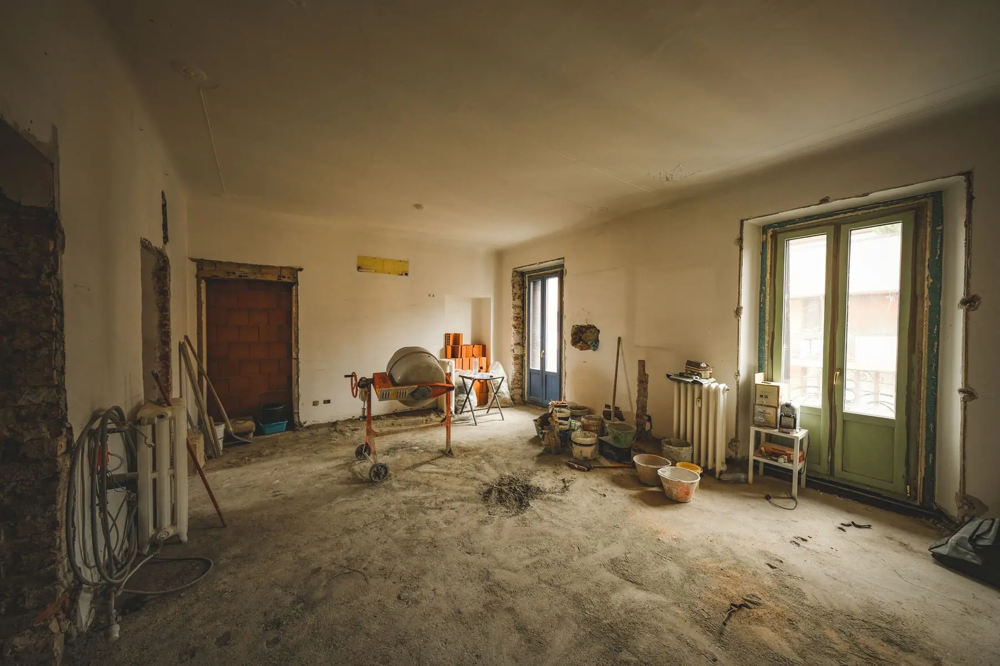

Page de travail, non publiée dans le menu
Six barres pour le avant/après
Faites glisser chaque barre (souris, doigt ou flèches du clavier) pour comparer. Toutes utilisent les mêmes photos de l’échoppe.
A. Le cordeau (actuel)
Ligne bleue de poudre de craie, poignée ronde. Elle vibre quand on la lâche, comme un cordeau qu’on claque sur un mur.


B. Le ruban de masquage
Une bande de ruban beige posée verticalement, comme celle qu’on colle avant de peindre. Les mots « chantier » et « livré » sont écrits dessus au feutre.
C. Le mètre ruban
Un mètre jaune gradué tous les centimètres, avec son boîtier comme poignée. Évoque la prise de mesures du relevé.
D. Le niveau laser
Un trait rouge fin et lumineux, avec le petit boîtier du laser posé en bas de l’image. Très précis, très technique.
E. Le trait de crayon et la cote
Un trait de crayon de charpentier, et au centre une étiquette de cote « Chantier | Livré » comme sur un plan.
F. Le joint ouvert
Une simple fente couleur enduit qui coupe l’image en deux, et deux chevrons au centre. La version la plus sobre.